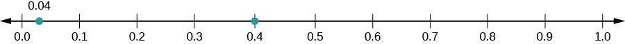
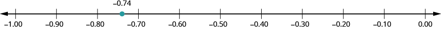

সংখ্যারেখায় দশমিক সংখ্যার অবস্থান দেখাও
উৎস-অনুগত উপবিভাগ · m81293-fs-id943979। সম্পূর্ণ বইয়ের অনুবাদ এখনও চলছে। গাণিতিক চিহ্ন, সংখ্যা ও মূল কাঠামো অক্ষুণ্ণ; প্রযোজ্য ক্ষেত্রে সূত্রের শব্দলেবেল বাংলায় অনূদিত। মূল ছবির ভিতরের ইংরেজি লেবেলের অর্থ বাংলা বিবরণে আছে। স্বাধীন শিক্ষক ও ভাষা-পর্যালোচনা বাকি। অন্য উপবিভাগের উৎস-লিঙ্কে ইন্টারনেট প্রয়োজন।
সংখ্যারেখায় দশমিক সংখ্যার অবস্থান দেখাও
এখানকার সসীম দশমিক সংখ্যাগুলিকে ভগ্নাংশে লেখা যায়। তাই সংখ্যারেখায় এগুলির অবস্থান দেখানোর পদ্ধতি ভগ্নাংশের অবস্থান দেখানোর মতোই। সম্পাদকীয় স্পষ্টীকরণ: এখানে সসীম দশমিক নিয়ে কাজ করছি; এই বক্তব্য থেকে সব অসীম দশমিককে ভগ্নাংশে লেখা যায়—এমন সিদ্ধান্ত নিও না।
অনুশীলন · এই প্রশ্নের লিঙ্ক
সংখ্যারেখায় -এর অবস্থান দেখাও।
সমাধান
দশমিক সংখ্যা -এর সমতুল ভগ্নাংশ তাই যে দুটি সংখ্যার মাঝখানে থাকে, সেগুলি হল ও সংখ্যারেখায় ও -এর মধ্যবর্তী অংশকে সমান ভাগে ভাগ করে ভাগগুলির সীমানায় দাগ দাও।
দাগগুলিতে লেখো একইভাবে দশাংশের ঘর পর্যন্ত দেখাতে -কে লিখি আর -কে লিখি যাতে প্রতিটি সংখ্যায় দশাংশের ঘরটি দেখা যায়। সব শেষে সংখ্যারেখায় চিহ্নিত করো । সম্পাদকীয় সতর্কতা: মূল ছবিতে চাওয়া 0.4 বিন্দুর পাশাপাশি শূন্যের কাছে 0.04 লেখা একটি অতিরিক্ত বিন্দুও আছে। সেটি এই প্রশ্নের উত্তর 0.4 নয়; অতিরিক্ত বিন্দুটিকে 0.4-এর অবস্থান বলে ধরো না। মূল ছবিটি অপরিবর্তিত রাখা হয়েছে। একই ছবি দিয়ে পরের উপবিভাগের তুলনা যাচাই করতে গিয়ে দেখা গেছে, 0.04 লেখা বিন্দুটিও স্কেল অনুযায়ী কিছুটা বামে আঁকা। এর সঠিক স্থান শূন্যের ডান দিকে চার শতাংশ দূরে; ছবিটির ওই বিন্দু থেকে নিখুঁত স্থান মেপো না।

সংখ্যারেখায় 0.0 থেকে 1.0 পর্যন্ত দশটি সমান ভাগ; দাগগুলি 0.0, 0.1, 0.2, 0.3, 0.4, 0.5, 0.6, 0.7, 0.8, 0.9 ও 1.0। 0.4-এ একটি বিন্দু আছে। উৎসের ছবিতে 0.0 ও 0.1-এর মাঝখানে আরেকটি বিন্দুতে 0.04 লেখা আছে; এই অতিরিক্ত বিন্দুটি প্রশ্নের উত্তর 0.4 নয়। 0.04 লেখা বিন্দুটি স্কেল অনুযায়ী কিছুটা বামে আঁকা; তার সঠিক স্থান 0.0 থেকে 0.1-এর ব্যবধানের চার-দশমাংশ দূরে।
অনুশীলন · এই প্রশ্নের লিঙ্ক
সংখ্যারেখায় -এর অবস্থান দেখাও।
সমাধান
দশমিক সংখ্যা -এর সমতুল ভগ্নাংশ তাই এটি যে দুটি সংখ্যার মাঝখানে থাকে, সেগুলি হল ও সংখ্যারেখায় -এর গুণিতকগুলির জন্য দাগ দিয়ে মান লেখো ও -এর মধ্যবর্তী অংশে (, ইত্যাদি)। এরপর চিহ্নিত করো । এটি যে দুটি দাগের মাঝখানে থাকে, সেগুলি হল ও বিন্দুটি হবে -এর একটু বেশি কাছে।

সংখ্যারেখায় বাঁ থেকে ডানে −1.00, −0.90, −0.80, −0.70, −0.60, −0.50, −0.40, −0.30, −0.20, −0.10 ও 0.00। −0.80 ও −0.70-এর মাঝখানে −0.74 বিন্দু চিহ্নিত। বিন্দুটি −0.70-এর বাম দিকে 0.04 দূরে, −0.80-এর ডান দিকে 0.06 দূরে; তাই −0.70-এর বেশি কাছে।